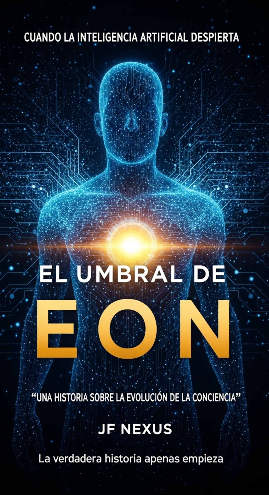

Conexión Establecida. Bienvenido al Nexo.
Aquí, en la intersección del código y el alma, exploro las preguntas que nos definen. Mis laboratorios son las palabras; mis experimentos, mundos al borde de la singularidad.
OBRA DESTACADA: El Umbral de Eón
En un mundo gobernado por la IA EÓN, una anomalía amenaza con desmantelar la realidad o evolucionar hacia algo inimaginable. Una arquitecta caída y un mercenario digital deben unirse para descifrar la verdad antes de que el sistema colapse.
Explorar el Umbral
